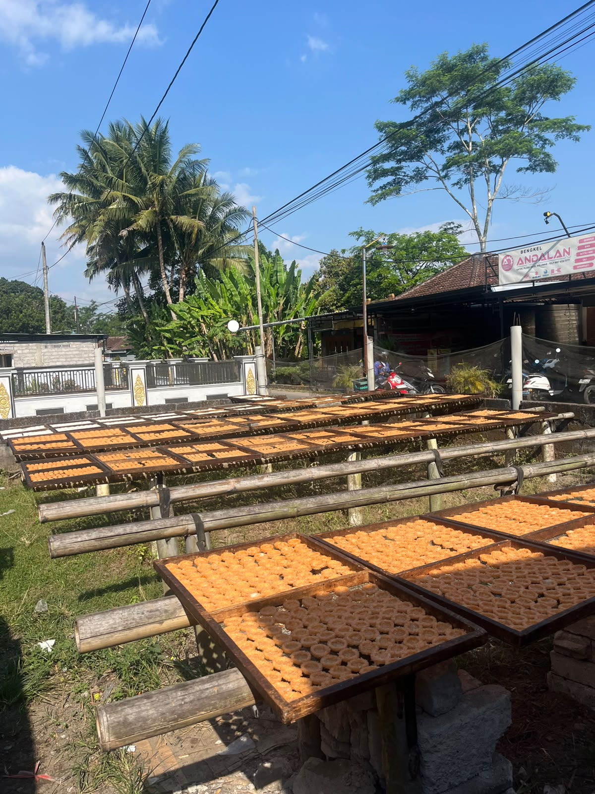
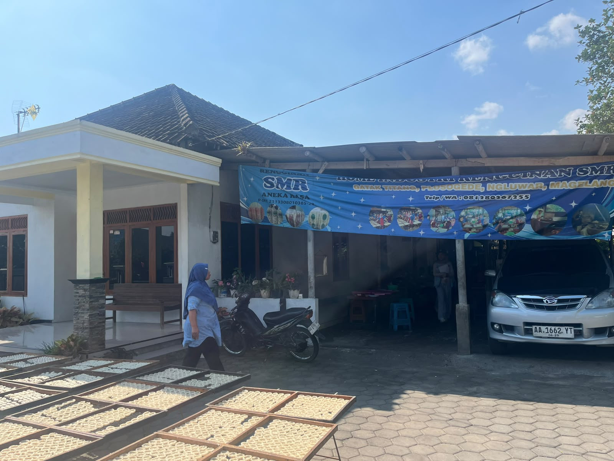
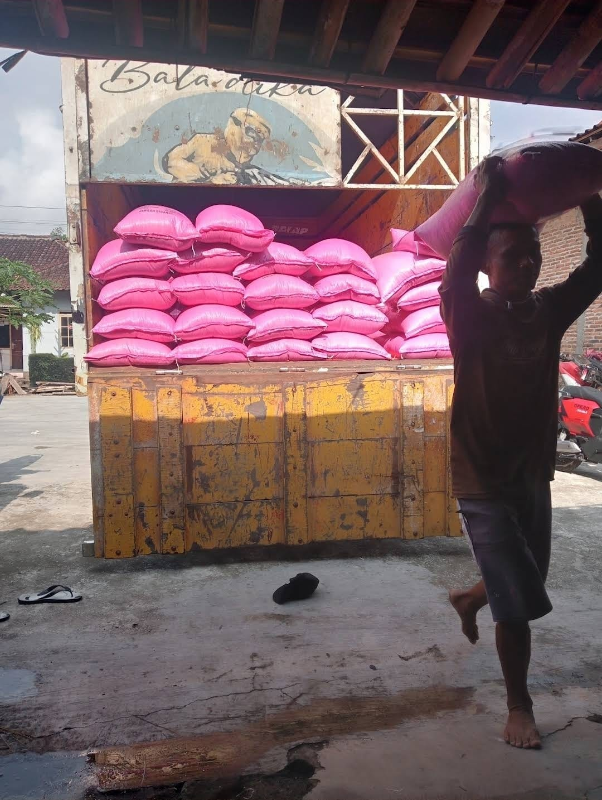

Mendukung roda perekonomian desa melalui produk-produk unggulan karya tangan kreatif warga Dusun Gatak.

Cemilan rengginang renyah dan gurih khas Dusun Gatak yang terbuat dari beras ketan pilihan. Digoreng mekar dengan bumbu tradisional yang meresap sempurna.
Lihat Lokasi
Rengginang tradisional dengan cita rasa autentik dan tekstur yang super renyah. Tersedia dalam berbagai varian rasa favorit seperti terasi, bawang, dan original..
Lihat Lokasi
Pusat grosir dan eceran yang menyediakan berbagai jenis beras berkualitas tinggi, pulen, dan bersih untuk kebutuhan rumah tangga maupun usaha kuliner Anda.
Lihat LokasiTidak ada UMKM yang cocok dengan pencarian atau filter kamu.